Email: ethanmaynes97@gmail.com
Hi there! My name is Ethan Maynes and I am an amateur digital artist and model kit builder
I draw in the program Clip Studio Paint and mostly build 1/144 scale gunpla and airplane kits.
HGUC (High Grade Universal Century) Desert Zaku II F2
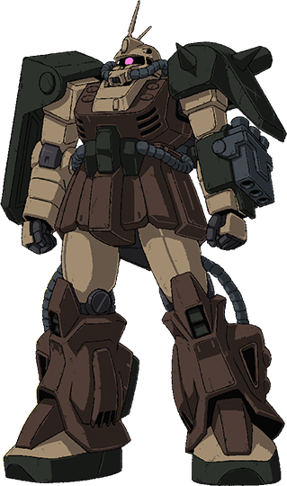Animation Model
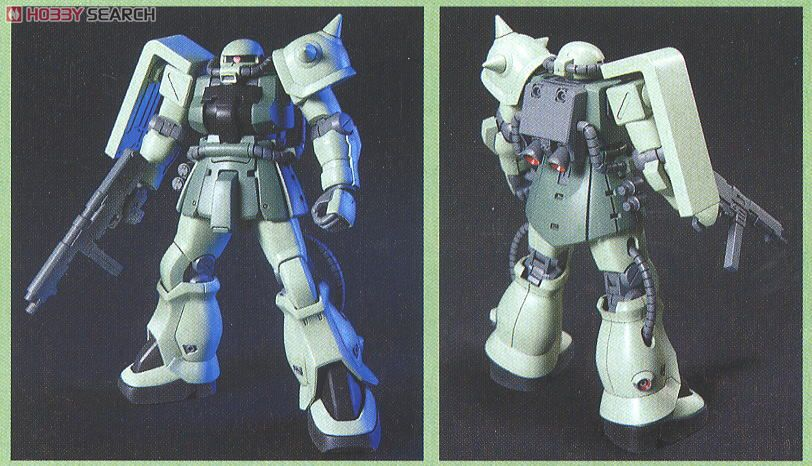Base Kit
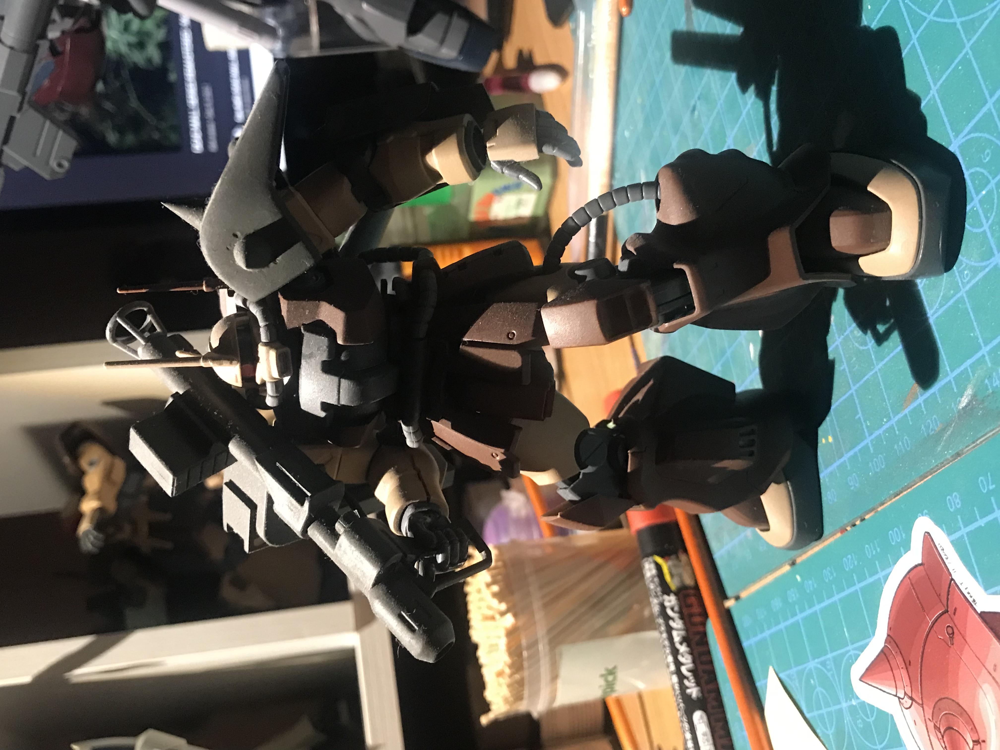 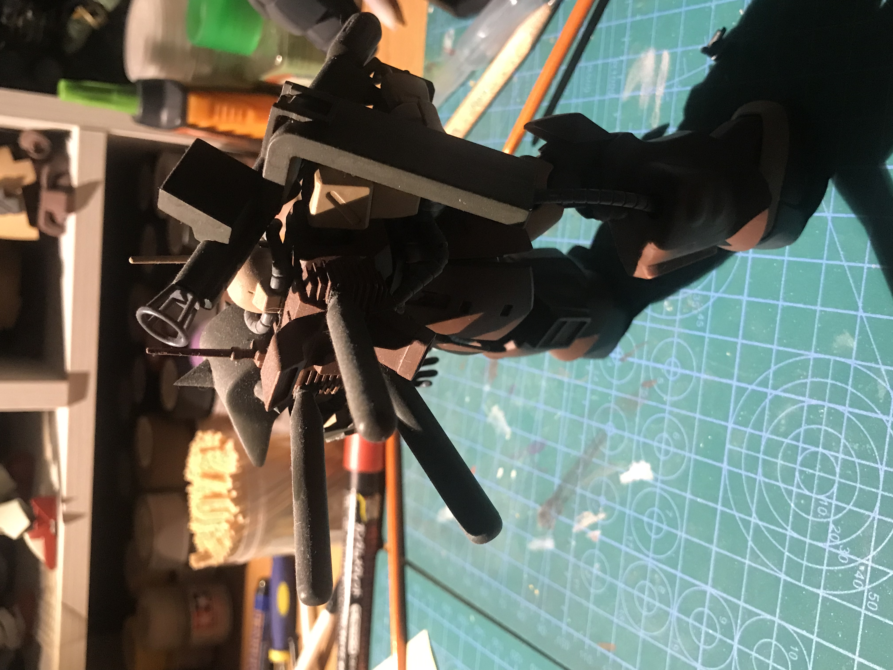Results
This was my first real custom build ever and it was a very daunting task. I had to cut and mod some parts from a really old kit and use 2 part putty to make sure everything looked smooth. In the end I think I did pretty well on this one and while there are some issues like not sanding some pieces enough it still looks pretty good.
HGUC RGM-89J Jegan A-Type
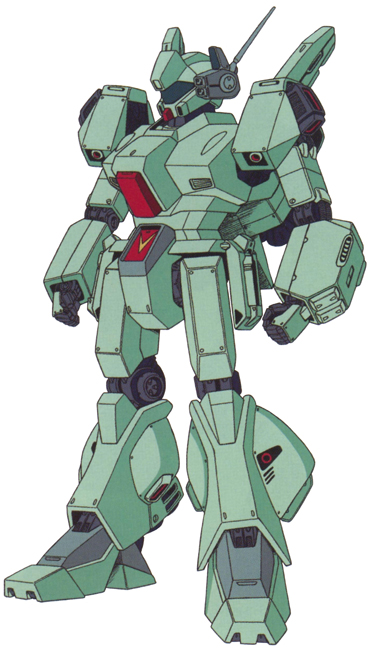Animation Model
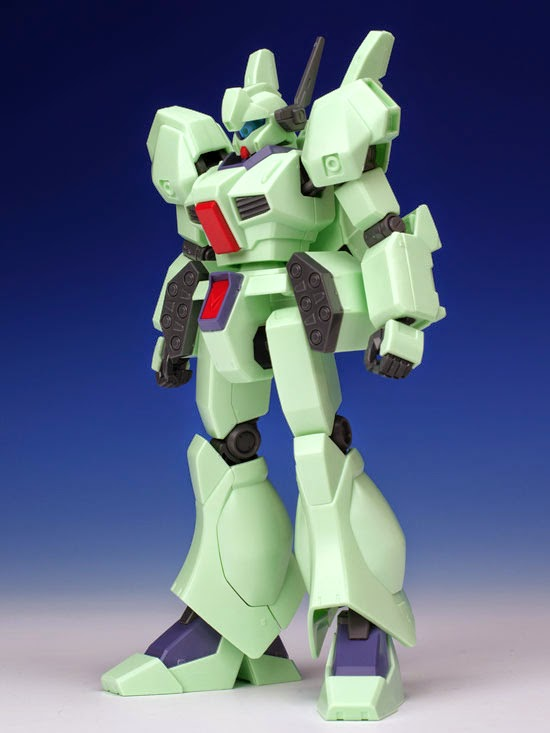Base Kit
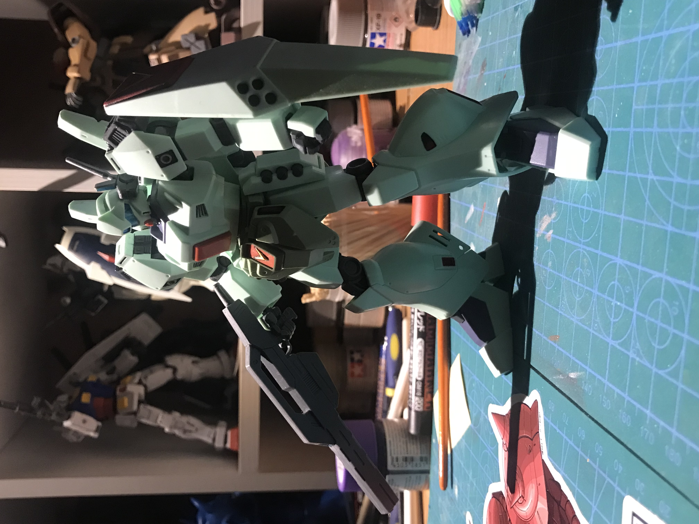Results
A recent build I did. I did a kitbash of old parts from another kit to give it a proper backskirt and frontskirts for added armor. I also did some painting to make it match the animation model of the actual Jegan from the Gundam F91 movie
Revell 1/144 Panavia Tornado
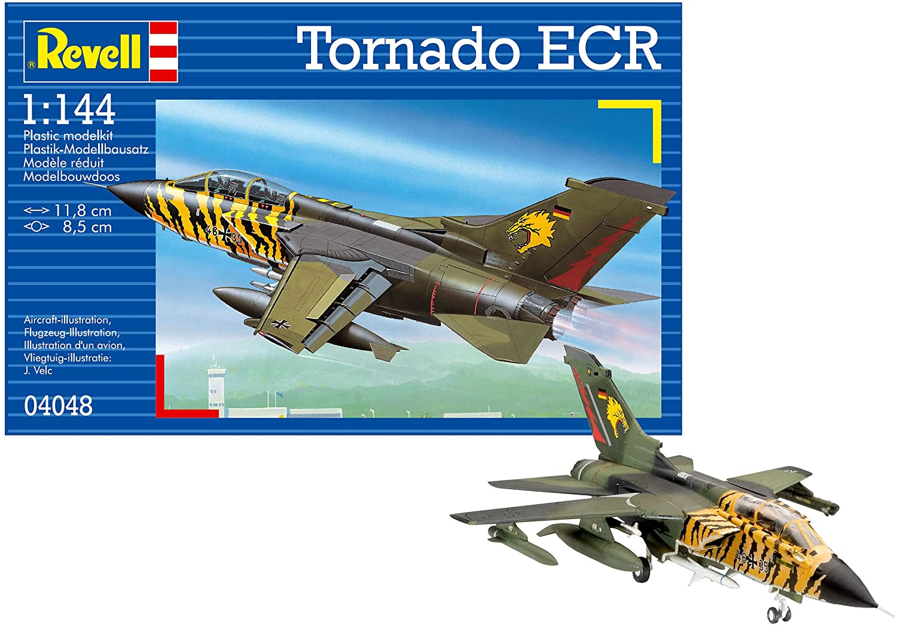Base Kit
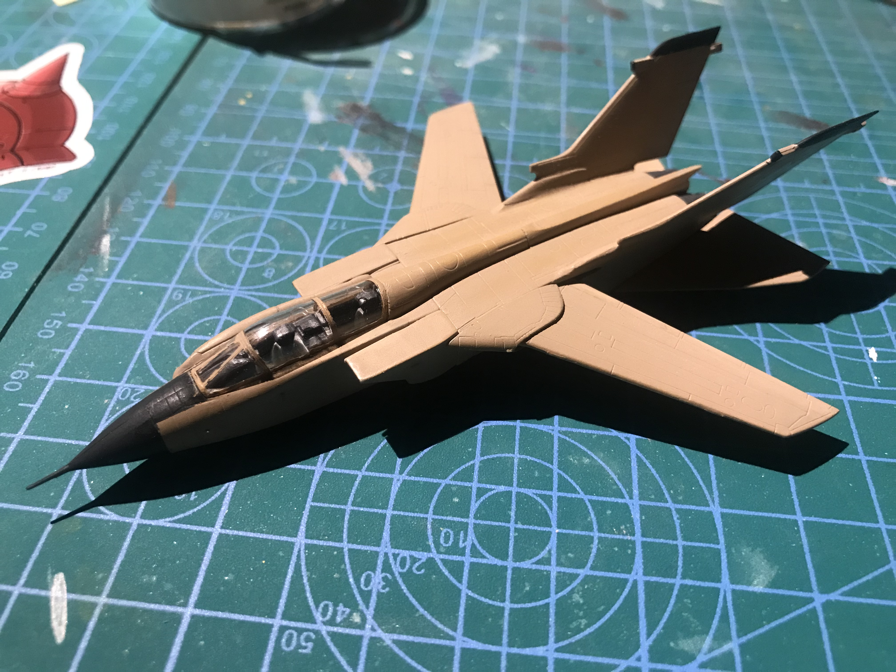 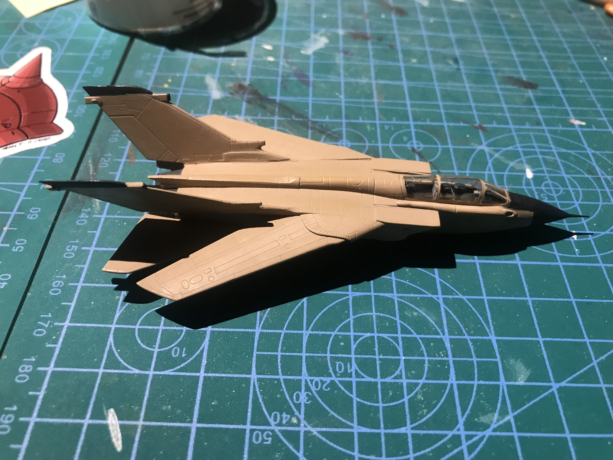Results
A modified 1/144 scale kit of the real world Panavia Tornado fighter bomber used by NATO The main modification was making it a twin tail from a single using a combination of plastic cement to weld the tails to the plastic and two part epoxy putty to "blend" the base of the tailfins to the main fuselage
HGUC Geara Zulu/Rozen Zulu (WIP)
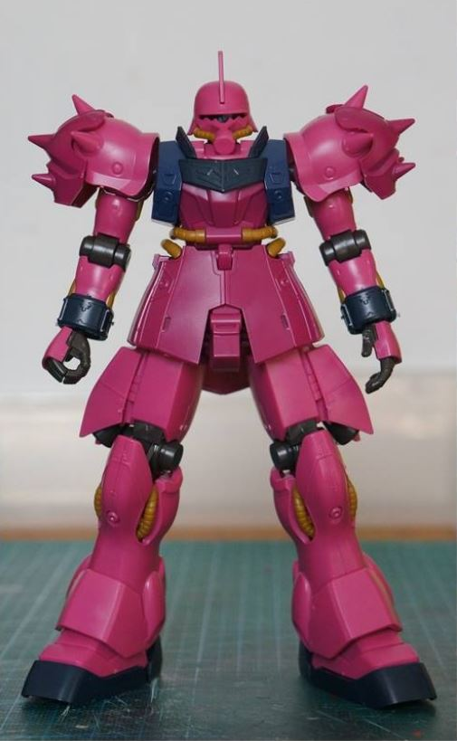Geara Zulu Base Kit
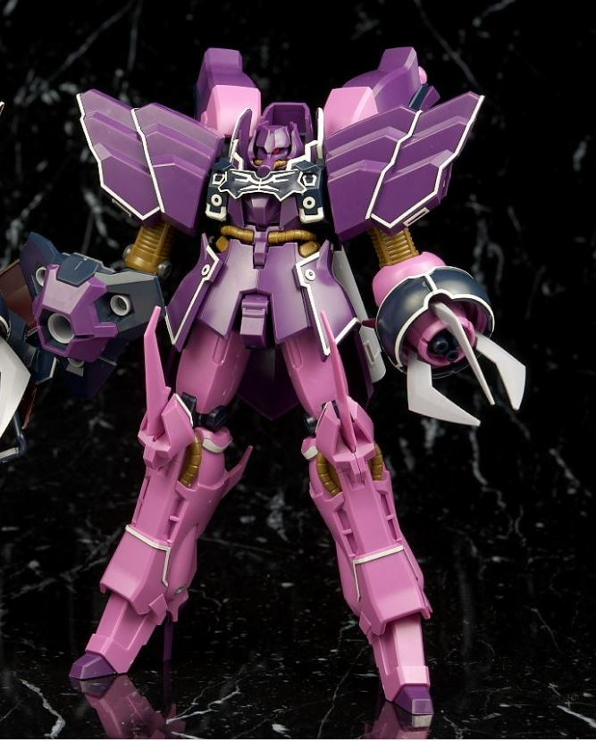Rozen Zulu Base Kit
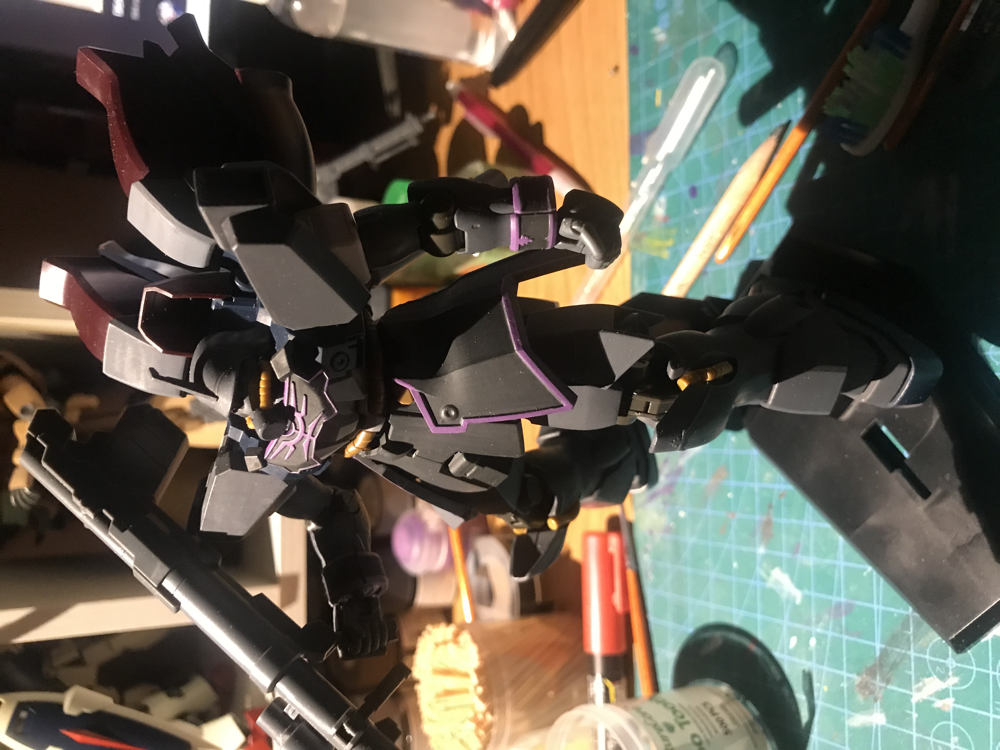Results
This is a current work in progress build I'm currently working on. Basically I'm combining parts from two different kits and hand painting them to the best of my ability. I'm pretty satsified with how it looks so far.
Some art I've done in the past. I mainly am a digital illustation hobbyist so I'm not exactly the greatest but I did my best. This gallery will also feature Work-in-Progress pieces that I never got around to finishing but desire to finish one day. I mainly draw aviation, mecha, and anime stuff and these were all done in the Clip Studio Paint program with some enhancements from Photoshop CS6.